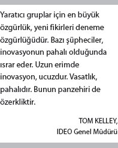
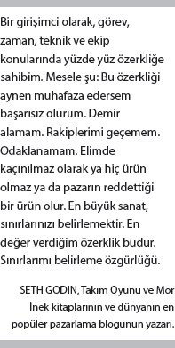
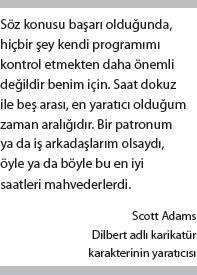
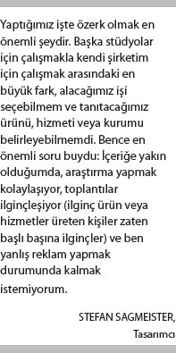

Geleceği görüyorum... ve gerçekten işe yarıyor. Sydney'de gün boyu devam eden küçük patlamalarda işe yarıyor. Silikon Vadisi'ndeki gerilla tarzı yan projelerde işe yarıyor. Virginia'nın Charlottesville şehrindekileri memnun ettiği her seferde işe yarıyor ayrıca. İşe neden yarıyor? Bunun sırrı işe nasıl yaradığında saklı. Ekonomide yönetime dair eski moda fikirler, yavaş da olsa, insanların özgür bırakılmasına dair yeni fikirlere yerini terk ediyor artık.
Yağmurlu bir Cuma günü Charlottesville'de saat öğleni biraz geçe, CEO Jeff Gunther'in çalışanlarının sadece üçte birinin işe gelmesinin de nedeni bu. Ama girişimci, idareci, kapitalist Gunther, ne endişeli, ne de öfkeli. Hatta bir keşiş kadar sakin ve dikkatli. Belki kendisi de ofise geleli daha bir saat olduğu için böyle. Veya belki personelinin kaytarmadığını, kendi belirledikleri şekilde çalıştıklarını bildiğinden böyledir.
Gunther, yönettiği üç şirketten biri olan Meddius'ta yılın başında özerklik konusunda bir deney başlattı. Hastanelerin bilgi işlem sistemlerini kendi içlerinde bütünleşik hale getirmelerine yardımcı olan bilgisayar yazılım ve donanımı üzerine faaliyet gösteren şirketini sonuca odaklı bir çalışma ortamına (ROWE) dönüştürdü.
ROWE'nin fikir babası Cali Ressler ile Jody Thompson adında iki insan kaynakları yöneticisi. Eskiden Amerikan perakende şirketi Best Buy'da çalışıyorlardı. ROWE'nin ilkeleri ile Benjamin Franklin'in sağduyulu pragmatizmi ve Saul Alinsky'nin çok yankı yaratan radikalizmini birleştiriyor. ROWE vasfına sahip bir iş ortamında insanların çalışma programları, saatleri yok. İstedikleri zaman işe geliyorlar. Belli bir saatte işe gelmeleri zorunlu değil. Tek şart, işlerini yapmaları. İşlerini nasıl, ne zaman ve nerede yaptıkları tamamen kendi bilecekleri konu.
Otuzlu yaşlarının başında olan Gunther'e bu çok ilginç geldi. Bana "yönetim, etrafta dolaşıp insanların ofiste olup olmadıklarına bakmak değildir" dedi Gunther görüşmemizde. Yönetim demek, insanların ellerinden gelenin en iyisini yapmalarını sağlayacak şartları yaratmaktı. O nedenle çalışanlarının zincirini hep olabildiğince uzun tuttu. Ama Meddius büyüyüp de Gunther yeni bir ofis arayışına girdiği zaman sofistike işler yapan yetenekli, yetişkin çalışanların gerçekten bir zincire ihtiyacı olup olmadığını düşünmeye başladı. Şirketin Noel yemeğinde, Aralık 2008'de bir açıklama yaptı: Yeni yılın ilk doksan gününde yirmi iki kişilik bütün operasyon bir deneye katılacaktı. Deneyin adı ROWE idi.
Gunther, "Başlarda insanlar anlamadılar" diyor. Eskisi gibi sabah dokuzda ofise gelmeye, akşamüstü de çıkmaya devam etmişler. Çalışanlardan bir kısmı son derece sıkı ortamların söz konusu olduğu şirketlerden gelmişlerdi. Bu tür bir serbestliğe alışık değillerdi. (Çalışanlardan birinin önceki şirketinde personelin sabah sekizde işte olması zorunluymuş. Sadece beş dakika bile geç kalsa, herkesin okuması için bir açıklama yazmak durumunda kalıyormuş.) Ama birkaç hafta geçtikten sonra insanlar olayı anlamaya başladı. Verimlilik arttı. Stres azaldı. Çalışanlardan ikisi, özgürlükle mücadele etmede zorlanarak ayrılsa da test süresi sonunda Gunther, ROWE konseptini daimi olarak uygulama kararı aldı.
Gunther, "Dışarıdan bazı kişiler benim deli olduğumu düşünüyorlardı" diyor. "'Elemanların şirkette değilken ne yaptıklarını nereden biliyorsun?' diye soruyorlardı." Ama Gunther'e göre ekibi bu yeni düzenlemede eskisine göre daha yüksek verimlilikle çalışıyordu. Bunun bir nedeni, artık çocuklarının futbol maçını izlemek için saat üçte işten çıkması gerektiğinde birinin onlara kaytarıcı deyip demeyeceğine değil de, sadece işin kendisine odaklanmalarıydı. Elemanların çoğu yazılımcı, tasarımcı ve yüksek düzey yaratıcılık gerektiren diğer alanlardan kişiler olduğu için bunu yapmak zorunluydu. Gunther, "Onlar için her şeyden önce ustalık geliyor. Bu nedenle olabildiğince özerk olmak istiyorlar" diyor.
Çalışanların önlerinde hâlâ ulaşmaları gereken spesifik hedefler var. Örneğin bir projeyi belli bir sürede tamamlamak veya belli satış rakamlarına ulaşmak gibi. Yardıma ihtiyaçları olduğunda Gunther hep yanlarındaydı. Fakat sonra bu hedeflerle para arasındaki ilişkiyi koparmaya karar verdi. Gunther, "Bu, esas konunun iş değil para olduğunu savunan bir kültür yaratıyordu" diyor. Gunther, paranın sadece eşikten atlatıcı bir motivasyon unsuru olduğuna inanıyor. "İnsanlara iyi ücret ödemelisiniz. Ailelerine bakabilmeliler. Ama bir şirket bir kere bu temel çizgiye ulaştı mı ondan sonra dolarlarınız performansı ve motivasyonu fazla etkilememeye başlıyor." Gunther'in de düşündüğü gibi bir ROWE ortamında bir çalışan, yıllık kazancında on bin hatta yirmi bin dolarlık artışlar olsa bile kolay kolay iş değiştirme yoluna gitmiyor. İyi iş yapmaları için kendilerine tanınan özgürlük, bir maaş artışına göre daha değerli, daha eşsiz. Çalışanların eşleri, sevgilileri ve aileleri de ROWE ortamının en ateşli destekçileri konumunda bulunuyor.
Gunther şöyle diyor: "Yaşıtlarım şirket sahibi oldukça bu sistem daha da yaygınlaşacak. Babamın nesli, insanları insan kaynağı olarak görüyor. Evinizi yaparken yararlanacağınız tahta kalaslardı insanlar onların gözünde. Bana göre bu, benimle çalışanlar arasında bir ortaklık. Onlar kaynak değil, ortaklarım." Ve ortaklar, herkes gibi kendi hayatlarını kendileri yönetmek istiyor.
OYUNCU MU PİYON MU?
Bazen "yönetim"in doğadan esinlenilmediğini unutuyoruz. "Yönetim", ne bir ağaçtır ne de bir ırmak. Televizyon gibi, bisiklet gibi bir şeydir. İnsanların icat ettiği bir şeydir. Strateji gurusu Gary Hamel'in ifadesiyle yönetim, bir teknolojidir. Motivasyon 2.0 gibi artık menteşeleri gacırdamaya başlamış bir teknolojidir ama. Bazı şirketler menteşeleri biraz yağladı. Çokça şirket de yağlar gibi göründü. Ama özünde yüz yıldan uzun zamandır fazla bir değişim yaşanmadı. Kontrol, merkezindeki ahlak anlayışında. Harici motivasyon unsurları, ana gereçleri. Dünya ülkelerinin birçoğunun ekonomileri bugün rutinlikten uzak, sağ beyin becerilerine bel bağlamış durumda ve Motivasyon 2.0, mevcut durumun çok gerisinde kalmış bulunuyor. Fakat bu en büyük zaafı acaba daha da derinleşebilir mi? Yönetim, şimdiki haliyle insan doğasının da çok gerisinde kalmış olabilir mi?
Yönetim kavramı (yani tedarik zincirlerinin değil de insanların yönetilmesi), yönetilenlerin temel doğasında bulunan özelliklere dair belli inanışlar üzerine oturtulmuştur. Buna göre ilerlemek, harekete geçmek için çivili bir sopayla dürtülmemiz gerekir. Ortada bir ödül veya ceza yoksa olduğumuz yerde mutlu mesut durmaya devam ederiz. Bir kere harekete geçtik mi önümüze illa ki bir yön koymak da gerekir. Güvenilir, sağlam bir kılavuzumuz yoksa oraya buraya savruluruz.
İyi de özümüzde gerçekten böyle miyiz? Başka bir benzetme kullanmak gerekirse, bu bizim gerçekten de "varsayılan ayar"ımız mıdır? Dünyaya geldiğimizde pasif ve eylemsiz olmak mı yoksa aktif ve girişken olmak mı yazar kaderimizde?
Ben, ikincisinin gerçek olduğuna inanıyorum. Doğamızda merak ve özgürlük var. Bunu söyleme nedenim, gözleri nemli bir idealist değil, gençlere çok yakın ve üç çocuk sahibi olmam. Altı aylık ya da bir yaşında olup da meraklı ve başına buyruk olmayan bir ufaklık gördünüz mü hiç? Ben görmedim. Kutudan böyle çıkıyoruz biz. On dört veya kırk üç yaşında pasif ve durağan biriyseniz doğanızda olduğundan değildir bu. Varsayılan ayarlarımızı bir şey değiştirdiği içindir.
O şey pekala yönetim olabilir. Patronların bize işte nasıl davrandıkları değil sadece. Okullara, evlere ve hayatın diğer boyutlarına da sızan daha geniş ölçekli bir sistemden bahsediyorum. Yönetim belki de sözüm ona doğuştan gelen o pasif eylemsizlik halimize cevap veremiyordur. Belki yönetim, varsayılan ayarımızı değiştiren ve o hali yaratan kuvvetlerden biridir.
Bu durum göründüğü kadar sinsice veya haince değildir. Ekonomik anlamda hayatta kalmak adına doğamızın bir kısmını geri plana itmek mantıklı bir hareket olabilir. Benim atalarım öyle yaptı; sizinkiler de öyle. Şimdi bile başka seçeneğimizin olmadığı zamanlar yaşıyoruz.
Gelgelelim bugün ekonomik başarı –kişisel başarı konusuna hiç girmiyorum bile– farklı bir boyut kazanmış durumda. Artık doğamıza uygun davranmamız bize başarıyı getiriyor. İnsanları kontrol etme arzumuza hakim olmalı, onun yerine insanlardaki özerklik duygusunu canlandırmak için her şeyi yapmalıyız. Kendi kendini yönetme kapasitesi Motivasyon 3.0 ve Tip I davranışının özündeki ana unsurdur.

Özerklik teorisinin merkezinde insanoğlunun doğasındaki kendi yolunu kendi çizme duygusu yatar. Önceki bölümde de anlattığım gibi Deci ve Ryan, özerkliği üç ana insani ihtiyaç arasında gösterir. Bu üç ihtiyaçtan en önemlisi özerkliktir. 1980'lerde Deci ve Ryan, çalışmalarını sürdürürken davranışı içsel veya dışsal olarak motive edilen bir olgu niteliğinden çıkartıp kontrol edilen veya özerk bir olgu kategorisine sokmuşlardı. Araştırma raporlarında, "Özerk motivasyon, tam bir istem ve tercih bilinciyle hareket etmekten geçer. Oysa kontrol edilen motivasyon, kişinin harici olarak algıladığı güçlerin belirlediği spesifik sonuçlara yönelik baskı ve talep doğrultusunda davranmayı gerektirir" diye yazıyorlardı.[56]
Onların gözünde özerklik, bağımsızlıktan farklıydı. Amerikan kovboylarının haşin, yalnız, "babana bile güvenme"ci bireyselliği ile ilgisi yoktu. Özerklik, tercihlerine göre hareket etmeyi tanımlar. Bir başka ifadeyle hem özerk olabiliriz hem de başkalarıyla mutlu mesut bir ilişki kurabiliriz. Bağımsızlık kavramının ulusal ve siyasi çağrışımları olmakla beraber özerklik, batı dünyasında değil de insanlığın geneline ait bir kavram gibi görünüyor. Araştırmacılar, özerklik ile genel anlamda esenlik içinde olma durumu arasında bir bağlantı olduğunu saptadılar. Ancak bu bağlantı sadece Kuzey Amerika ve Batı Avrupa'ya özgü değildi. Rusya, Türkiye ve Güney Kore'de aynı bağlantının mevcut olduğunu gördüler.Ağır bir yoksulluğun hüküm sürdüğü Bangladeş gibi doğu dünyasından bir ülkede bile sosyal bilimciler özerkliğin insanların peşinden koştuğu, hayatlarını iyileştiren bir şey olduğunu keşfettiler.[57]
Bireysel performans ve tutum üzerinde özerklik duygusunun güçlü bir etkisi var. Son dönemde yapılan davranış bilimi araştırmalarına göre özerk motivasyon, öğrencilerin kavramsal anlama düzeyini ve notlarını yükseltiyor, çalışma azimlerini artırıyor. Sporcular da daha yüksek verimlilik sergilerken, moral çöküntüleri azalıyor ve psikolojik sağlıkları daha da iyi hale geliyor.[58] Bu sonuçlar işyerine de taşınıyor. Deci ve Ryan, Fordham Üniversitesi öğretim üyelerinden Paul Baard ile birlikte bir Amerikan yatırım bankasında bir çalışma yaptı. Araştırmacılar, patronlarının "özerklik desteği" verdiği çalışanlar arasında iş memnuniyetinin daha yüksek olduğunu belirledi. Bu patronlar, konulara çalışanın gözüyle bakıyor, değeri olan geribildirimlerde bulunuyor, neyin nasıl yapılacağına dair bol seçenek sunuyor, çalışanlarına yeni projelere dahil olma konusunda cesaret veriyorlardı. Bunların sonucunda iş memnuniyeti artıyor, verimlilik yükseliyordu. Dahası, özerkliğin bireylere kazandırdıkları, şirketlerine de yansıyordu. Cornell Üniversitesi'nden bir grup araştırmacı, yarısı çalışanlarına özerklik tanıyan, yarısı da yukarıdan aşağıya bir yapılanmayı benimsemiş üç yüz yirmi şirketi mercek altına aldı. Özerklik tanıyan şirketler, kontrol odaklı şirketlere göre dört kat fazla büyürken, bu şirketlerde personel sirkülasyon oranı da diğerlerinin üçte biri oranındaydı.[59]
Fakat bilimin gerisinden gelen çok sayıda şirket var hâlâ ne yazık ki. Yirmi birinci yüzyıl yönetim kavramlarının çoğu, insanların oyuncu değil piyon olduğunu savunur. Bir örnek vermek gerekirse İngiliz ekonomist Francis Green, İngiltere'de verimlilik ve iş memnuniyetindeki azalışın açıklaması olarak işyerinde bireysel takdir hakkının kısıtlı olmasını ortaya koyar.[60] Yönetim hâlâ büyük oranda gözetim ve denetim, şartlı ödüller ve diğer kontrol metotlarına dayalıdır. Daha rafine, daha nazik olan, "esneklik" ve "yetki verme" gibi tatlı sözcükler telaffuz eden Motivasyon 2.1 sürümünde dahi bu durum geçerliliğini koruyor.
Şu "yetki verme" kavramını hep birlikte bir kere daha düşünelim. Bu kavram, bir şirketin güç sahibi olduğunu ve bu gücün bir kısmını, lütfederek, aşağıda şükran duyguları içinde bekleşen çalışanlarının çanaklarına boşalttığını varsayar. Ama bu özerklik değildir. Bu, kontrolün birazcık daha uygarlaşmış halidir. Yöneticilerin "esnek zaman" kavramına bakışlarını değerlendirelim isterseniz. Ressler ve Thompson, buna "alavere dalavere" adını vermişler ve bunda da çok haklılar. Esneklik sadece çitleri genişletir ve ara sıra da kapıları açar. Kuzu postuna bürünmüş kontrol de denilebilir onun için. Bu sözcüklerin kendileri hem zamana hem de insan doğasına aykırı inanışları içlerinde barındırır. Kısacası, yönetim çözüm değil, sorunun ta kendisidir.
Artık belki de "yönetim" sözcüğünü lisan çöplüğüne, "buz kutusu" ve "atsız araba"nın yanına yollama zamanı geldi. Bu çağın artık daha iyi bir yönetime değil, bir özerklik devrimine ihtiyacı vardır.
DÖRT TEMEL NOKTA
Üniversiteden yeni mezun, ağzı süt kokan iki arkadaş, Scott Farquhar ile Mike Cannon-Brookes, kredi kartlarından on bin dolar çekerek bir yazılım şirketi kurdular. Firmalarına, dünyayı omuzlarında taşıyan Yunan mitoloji karakteri dev Atlas'ın isminden esinlenerek Atlassian ismini verdiler. İkili, kurumsal yazılım alanında dünyanın bazı en büyük yazılım şirketlerine karşı rekabete girişti. Başlarda şirket, yalpalar gibi oldu. Bugünse kanatlanmış uçuyor. Mükemmel yazılımlarıyla akıllı kurumsal uygulamaları birleştiren Atlassian, otuz beş milyon dolarlık yıllık ciroya ve Sydney, Amsterdam ve San Francisco'daki ofislerinde yaklaşık iki yüz kişilik bir insan gücüne sahip.
Ama her iyi girişimci gibi Cannon-Brookes da sürekli bir memnuniyetsizlik bulutu altında yaşıyor. Başarılı şirketlerin duraksadığını görmüş ve kendisi bu kaderden sakınmak niyetinde. Ekibi içinde daha büyük bir yaratıcılık dalgasını ateşlemek ve Atlassian yazılımcılarının işyerlerinde eğlenmesini teminat altına almak için onları, kendi işlerinin bir parçası olmasa da istedikleri herhangi bir sorun üstünde bir gün geçirmeye teşvik etme kararı aldı.
Bu alışılmadık tarzdaki serbest çalışma günü uygulaması yeni ürünler için çeşitli fikirlerin doğmasını sağlarken, mevcut ürünlerle ilgili çok sayıda düzeltme yapılmasını ve yama çıkarılmasını da mümkün kıldı. Cannon-Brookes bunun üzerine söz konusu uygulamayı Atlassian kültürünün daimi bir unsuruna dönüştürmeye karar verdi. Artık, her üç ayda bir şirket bütün bir günü mühendislerin istedikleri yazılım sorunu üstünde çalışmalarına ayırıyor, ama yaptıkları işin her gün yaptıklarından farklı olması şart.
Perşembeleri öğleden sonra saat ikide gün başlıyor. Mühendisleri ve Cannon-Brookes, yeni bir yazılım kodu yazıyor veya çok zarif bir düzeltme yapıyor. Bunları herkes istediği kişiyle ve istediği şekilde gerçekleştiriyor. Birçoğu akşam saatlerine kadar çalışıyor. Sonra Çarşamba akşam üstü saat dörtte sonuçları, bol miktarda soğuk bira ve çikolatalı pastanın havada uçuştuğu, sıcak, samimi bir ortamda birbirleriyle ve şirketin geri kalanıyla paylaşıyorlar. Atlassian, bu yirmi dört saatlik özgürlük ve yaratıcılık patlamalarını "FedEx Günleri" olarak adlandırıyor. Çünkü insanlar gece bir şeyleri teslim etmek durumunda. Zamanla bu tuhaf, küçük egzersiz, başka türlü gerçekleşmesi kesinlikle imkansız çok sayıda yazılım düzeltmesine zemin hazırladı. Mühendislerden biri şöyle diyor: "Ürünlerimizin en önemli özelliklerinden biri böyle bir FedEx Günü'nde ortaya çıktı."
Performansa göre ücret bazlı bir sistem değil bu. Motivasyon 2.0 işletim sisteminin mekanik inanışlarıyla hiç alakası yok. Bu, Motivasyon 3.0 işletim sisteminin alternatif yolundan giden bir özerklik planı. Cannon-Brookes, "Biz hep parayı, kaybedebileceğiniz bir şey olarak kabul ettik" diyor. "Yeterli ücreti ödemezseniz insanları kaybedebilirsiniz. Öte yandan para, bir motivasyon aracı değildir. Diğer özellikler daha önemlidir." Geleceğe hazırlanan şirketlerden birkaçının keşfettiği bir şey var. O da bu önemli özelliklerden birinin özerklik, daha açık ifade etmek gerekirse özerkliğin iş üzerindeki dört boyutlu etkisi olduğudur: insanların neyi, ne zaman, nasıl ve kiminle yaptıkları. Atlassian'ın yaşadıklarının da gösterdiği gibi Tip I davranışı, insanlar şu dört konu üstünde özerklik sahibi olduklarında ortaya çıkmaktadır: görev, zaman, teknik ve ekip.
Görev
Cannon-Brookes hâlâ memnun değildi. FedEx Günleri çok iyi gidiyordu ama özünde bir zayıflığı vardı. Cannon-Brookes, "Yirmi dört saat içinde bir şey inşa ediyorsunuz ama üzerinde daha fazla çalışacak zamanınız olmuyor" diyor. O yüzden ortağı Farquhar ile beraber, personel özerkliği konusunda yatırdıkları bahsi artırmaya karar verdiler. 2008 ilkbaharında, bir duyuru yaparak sonraki altı ay boyunca Atlassian yazılımcılarının, tek bir yoğun gün değil, zamanlarının yüzde yirmisini istedikleri bir projede kullanabileceklerini açıkladılar. Çalışanlara yolladıkları mesajda şöyle diyorlardı:
Yeni faaliyete geçmiş bir şirketin mühendisi aynı anda birçok şey olmak zorundadır. O hem tam zamanlı bir yazılımcı, hem de yarı zamanlı bir ürün müdürü/müşteri destek gurusu/dahili sistemler uzmanıdır. Şirket büyüdüğünde, mühendis de ürünün içinde olmasını şahsen istediği şeylere daha az zaman ayırabilir hale gelir. Bu yüzde yirmilik zaman dilimi ile mühendislerimizin ürün inovasyonuna eğilebilecek, mevcut ürüne yeni özellikler ekleyebilecek, gerekli gördükleri düzeltmeleri yapabilecek ve eklenti geliştirebilecek yoğun çalışma olanağını bulacaklarını umuyoruz.[61]
Bu uygulamanın sağlam bir geçmişi ve çok iyi bilinen modern bir ifadesi var. Öncüsü Amerikan 3M şirketiydi. 1930 ve 1940'lı yıllarda 3M'in başkanı, düşüncelerindeki vizyonerliği ve mütevazılığı ile tanınan William McKnight idi. McKnight, basit –ve o zamanlar için huzursuzluk yaratıcı– bir düstura inanıyordu: "İyi insanları işe alın ve onları rahat bırakın." Yöneticiler için "yetki verme" kavramı moda olmadan çok önce özerklik konusunda çok ciddi bir duruş sergilemişti. 1948'de şöyle yazacaktı: "Yetki ve sorumluluk verdiğimiz erkekler ve kadınlar, eğer iyi insanlarsa işlerini kendi bildikleri gibi yapmak isteyeceklerdir."[62] McKnight, çalışanlarını "deneysel çiziktirme" dediği şeye katılmaya teşvik ediyordu.

Böyle sıra dışı fikirleri beyninde süzgeçten geçiren bu hiç umulmadık kurumsal günahkar, yeni bir politika ortaya koydu: 3M'in teknik ekibi, zamanlarının yüzde on beşini kendi istedikleri projelere ayırabilecekti. Girişim, Motivasyon 2.0'ın adetlerine o kadar karşı ve görünüşte o kadar aykırıydı ki şirket içinde "korsanlık politikası" olarak adlandırılacaktı. Ancak her şeye rağmen bu politika işe yaradı. Özerkliğin yüksek duvarlı bahçeleri çok geçmeden verimli inovasyon tarlalarına dönüştü. Bu tarlanın meyveleri arasında Post-it olarak bilinen yapışkanlı not kağıtlar da vardı. Art Fry isimli bir bilim adamı, bu yapışkanlı not kağıdı fikrini normal mesaisinde değil, yüzde on beşlik zaman dilimi içinde üretmişti. Bugün Post-it, şirketin en önemli ürünlerinden biri. 3M, yüzden fazla ülkede altı yüzden fazla ürün satıyor. (Ve kültürel etkileri daha bile büyük olabilir. Bir düşünün: McKnight'ın özerklik konusunda hayli erken bir dönemde yaptığı o vurgu olmasaydı, monitörlerimize yapışık duran sarı küçük yapışkanlı not kağıtlarımız olmadan yaşamak zorunda kalacaktık. Düşüncesi bile insanı iliklerine kadar titretiyor.) 3M'in eski araştırma ve geliştirme bölüm başkanına göre şirketin bugün bile sırtını dayadığı icatların çoğu o korsanlık ve deneysel çiziktirme zamanlarında ortaya çıkmış.[63]
McKnight'ın inovasyonu 3M'de halen yerli yerinde duruyor. Başarısı kanıtlanmış sonuçlarına rağmen o yoldan giden şirket sayısı ise şaşılacak derecede az. 3M'in tarzını benimseyen şirketlerin en ünlüsü Google. Şirket, uzun bir süredir mühendislerinin işyerindeki bir günlerini yan projelerden birine ayırmalarına izin veriyor. Bazı şirket çalışanları mevcut bir ürünü iyileştirmek için yüzde yirmiye varan oranda zaman ayırabiliyor. Ama çalışanların çoğu, bu yüzde yirmilik zamanı tamamen yeni bir şey geliştirmeye ayırıyor. Google tabii ki en doğrusunu yapıyor ve o yüzde yirmilik zaman diliminde yaratılan ürünlerin fikri mülkiyet haklarını devretmiyor. Normal bir yılda Google'un sunduğu yeniliklerin yarısından fazlası, çalışanların tam bir özerklik ile çalıştıkları bu zaman diliminde yaratılıyor. Mesela bilim insanı Krishna Bharat, çevrimiçi olarak taze haberleri bulmanın ne kadar zor olduğunu görerek yüzde yirmilik zaman diliminde Google News'u geliştirmiş. Siteye her gün milyonlarca ziyaretçi geliyor. Eski Google mühendislerinden Paul Bucheit, bugün dünyanın en popüler e-posta servislerinden biri olan Gmail'i yüzde yirmilik zaman diliminde yaratmış. Diğer birçok Google ürünü de benzer şekilde geliştirildi. Bunlar arasında sosyal paylaşım sitesi Orkut, anında mesajlaşma yazılımı Google Talk, gökbilime meraklı kişilerin evrenin fotoğraflarını inceleyebilmelerini sağlayan Google Sky ve mobil cihazlar için çeviri hizmeti veren Google Translate de yer alıyor. Yüzde yirmilik zaman dilimini hibrit otomobillerin verimliliğini artırmak için kullanan Google mühendisi Alec Proudfoot, bir televizyon mülakatında şöyle diyordu: "Google'da iyi fikirlerin hemen hepsi yüzde yirmilik zaman diliminde çıkıyor."[64]
Atlassian'da da yüzde yirmilik zaman dilimi uygulamasının işe yaradığını görüyoruz. Bir yıllık deneme süresince yazılımcılar toplam kırk sekiz yeni proje geliştirdi. 2009'da Cannon-Brookes, bu dozdaki özerkliği Atlassian'ın işleyişinin daimi bir unsuru haline dönüştürmeye karar verdi. Karar, herkesi hoşnut etmedi. Cannon-Brookes'un yaptığı hesaplamalara göre, altı aylık sürede zamanların yüzde yirmisini bu şekilde kullanan yetmiş mühendisin yaptığı çalışmaların maddi karşılığı bir milyon dolarlık bir yatırıma denk geliyor. Şirketin finans müdürü dehşete düşmüştü. Kimi proje yöneticileri –Atlassian, ileri düşünceli tutumuna karşın hâlâ yönetici sözcüğünü kullanmakta– çalışanların üzerindeki kontrolleri zayıfladığı için mutsuzdu. Birkaçı, çalışanların kendilerine verilen bu hakkı istismar edip etmediklerini denetlemek istediklerini söyleyince Cannon-Brookes'un cevabı olumsuz oldu. "Bu, çok fazla kontrolcülük olurdu. Ben mühendislerimin arkasında durmak ve iyi şeyler yapacaklarına inanmak istiyordum" diyor ve ekliyor: "Ayrıca insanlar, yüzde yirmilik zaman diliminde, normal mesailerindekinden çok daha verimliler. Facebook'a girmeyeceklerini, haber veya blogları okumayacaklarını söylüyorlar bana."
Bu aralar finanstan biri, tutup da fiyat etiketine itiraz ederse Cannon-Brookes'un ona vereceği cevap hazır: "Ona yaptığımız şeylerin uzun mu uzun listesini gösteririm. Mühendisler arasında sirkülasyonun sıfır olduğunu gösteririm. Ve ona mühendislerimizin son derece yüksek motivasyonla çalıştıklarını, ürünlerimizi hep iyileştirmek, mükemmelleştirmek için uğraştıklarını söylerim."
Görev üzerinde özerklik sahibi olmak, Motivasyon 3.0 işletim sisteminin işe dönük yaklaşımının ana unsurlarından biridir. Sadece teknoloji şirketlerine özgü de değildir. Mesela Washington'daki Georgetown Üniversitesi Hastanesi'nde birçok hemşire, kendi araştırma projelerini yapma özgürlüğüne sahip. Bu sayede hastanenin bazı program ve politikaları değişti.[65] Özerklik, farklı birçok alanda etkili olabiliyor, inovasyon ve hatta kurumsal reformlar konusunda bir derya işlevi görebiliyor.
Her gün müşterilere hizmet ederken, ürün yetiştirirken ve sorunlara çözüm ararken, o günlük koşuşturma arasında FedEx Günleri gibi girişimleri ve şirket destekli yan projeleri yürütmek her zaman kolay olmayabilir. Ama her sanatçı ya da tasarımcının da hemfikir olacağı gibi rutin dışı, yaratıcı ve kavramsal beceriler gerektiren bir ekonomide bunlar günden güne daha önemli hale geliyor. Yapılan işte özerklik sahibi olmak, yaratıcılık becerisi için uzunca bir süredir hayati önem taşıyor. Becerikli "yöneticiler"in tersine iyi liderler bunu iliklerinde hissediyor.
Efsanevi Amerikan mobilya üreticisi Herman Miller'ın uzun yıllardır tasarım direktörlüğünü yapan George Nelson'u ele alalım. Nelson, vaktiyle iyi bir tasarımın beş basit koşulunu belirlemişti. Bu koşullardan biri Tip I kişisi için görevde özerklik konusunda yol gösterici olacaktır. "Ne yapacağına sen karar vereceksin."
Zaman
Avukatlar niye bir meslek grubu olarak hep bir sefillik içindedir, merak ettiniz mi? Bazı sosyal bilimciler merak etmiş ve üç açıklama sunmuşlar. Bir tanesinin merkezinde kötümserlik var. Kötümserlik, psikologların "sübjektif esenlik" dedikleri durumun düşük düzeyde olmasının ana unsurudur. Ayrıca birçok meslek için de negatif bir özelliktir. Ama Martin Seligman'ın da belirttiği gibi "Çok özel bir istisna vardır. Kötümserler hukukta daha iyidir". Bir başka deyişle, bir insanı mutsuz eden özellik, bir avukat olarak o insanı daha başarılı kılabilir.[66] İkinci bir sebep: Diğer şirketlerin birçoğu pozitif toplama bakar. Ben size istediğiniz ve sevdiğiniz bir ürün satarsam, her ikimiz de mutlu oluruz. Oysa hukuk genellikle, ama her zaman değil, sıfır toplamlı bir oyundur. Biri kazandığı için biri mutlaka kaybeder.
Üçüncü sebep, en iyisi olabilir ve neden o kadar az sayıda avukatın Tip I davranış kalıbını sergilediğini anlamamızı sağlayabilir. Avukatlar sıklıkla yoğun talep bombardımanı altında kalır ama göreceli olarak küçük bir "karar serbestliği" içindedir. Davranış bilimciler bu terimi bir kişinin tercihleri ile algılanan tercihlerini tanımlamakta kullanırlar. Bu bir bakıma özerkliği tanımlamanın bir diğer yoludur. Oysa avukatlar, fazla bir özerkliğe sahip olmadıklarından somurtkan ve asabidirler. Bu durum erken çağlarda başlar. 2007 yılında iki Amerikan hukuk okulunda yapılan bir araştırmaya göre, okuldaki öğrencilerin genel esenlik durumları dibe vuruyor. Bunun en önemli nedeni, özerkliklerinin engellenmesi. Ama ders ve ödev seçiminde, hocalarıyla ilişkilerinde daha fazla özerkliği olan öğrenciler, daha düşük meyilli inişler sergiliyor, daha iyi notlar alıyor ve avukatlık sınavında daha başarılı oluyor.[67]
Özel avukatlık mesleğinin kalbinde, dünyanın belki de en kötü özerklik kırıcı mekanizması olan saat başı ücret sistemi yatıyor. Büyük ve saygın hukuk bürolarının hemen hemen bütün avukatları da dahil olmak üzere çoğu meslek erbabı, müvekkilleri için harcadıkları süreyi genellikle altışar dakikalık dilimler halinde faturalandırırlar. Yeterince saati faturalandıramazlarsa o takdirde işleri tehlikeye girer. Sonuç olarak odaklandıkları nokta, işlerinin çıktısından yani müvekkillerinin sorununu çözmekten girdisine yani olabildiğince çok saati faturalandırmaya kayar. Bu tür yüksek ve ölçülebilir hedefler insanlardaki içsel motivasyonu kurutabilir, bireysel girişim ruhunu öldürebilir ve hatta ahlakdışı davranışları teşvik edebilir. Eski ABD Yüksek Mahkeme Başyargıcı William Rehnquist'in de dediği gibi "Her yıl iki bin saatten fazla çalışma süresi faturalandırmak zorundaysanız, gerçekte harcadığınız süreyi abartma yoluna gitmeniz muhtemeldir".[68]
Saat başı ücret sistemi, Motivasyon 2.0'ın mirasıdır. Kimi rutin işlerde, mesela bir Ford Taurus'un kapılarının takılması veya basit bir vergi formundaki kesintilerin hesaplanması gibi işlerde anlamlı olabilir. Çünkü harcadığınız süre ile ortaya çıkan iş arasında sıkı bir ilişki söz konusudur. Başlangıç noktanız işçilerin işten kaytarma eğiliminde oldukları ise o takdirde zamanlarını nasıl kullandıklarını takip etmek onları dikkatli davranmaya yöneltecektir.
Ama saat başı ücret sisteminin Motivasyon 3.0'da fazla bir yeri yoktur. Hukuk gibi rutin olmayan işler için birinin harcadığı süre ile birinin ürettiği şey arasındaki ilişki düzensiz ve tahmin edilemez niteliktedir. Mucit Dean Kamen'ın ya da aktris Helen Mirren'ın çalıştıkları süreyi ücretlendirdiklerini bir düşünün. Alternatif ve daha doğru bir kanıdan, insanların işlerini iyi yapmak istedikleri noktasından yola çıkarsak, o takdirde harcayacakları zamandan çok, yapacakları işin kendisine odaklanmalarına izin vermemiz gerekir. Bazı hukuk büroları Tip I yönüne doğru kaymaya başladı bile. Çalışma süresine göre değil, sabit bir ücret alıyorlar. New York'un önde gelen bürolarından birinin ortağı şöyle diyor: "Artık saat başına ücretlendirme sisteminden kurtulmanın zamanı geldi."[69]

Saat başına ücretlendirme sisteminin bir antitezi varsa o da Jeff Gunther'in kendi şirketlerinde uygulamaya koyduğu türden, sadece sonuca odaklı bir çalışma ortamı yaratmaktır. ROWE sisteminin uyduğu ilk büyük şirket Best Buy'dı, ama mağazalarında değil, kurumsal ofislerinde. 3M'in yüzde on beşlik zaman dilimi uygulaması gibi Best Buy şirketinin deneyi de daha önce bahsettiğim, ROWE guruları haline gelen, özerklik mesajını dünyaya taşıyan Ressler ve Thompson tarafından başlatılan sıra dışı bir deney mahiyetindeydi. Best Buy'ın genel merkezi Minnesota eyaletinin Richfield şehrinde bulunuyor. Gayet ferah, modern, içinde resepsiyonu, kafeleri, kuru temizlemecisi olan bir bina bu. Ama şirket, personelini aşırı çalıştırmasıyla ve müdahaleci yöneticileriyle tanınıyor, kaybedilen yeteneklerin bedelini de haliyle ödüyordu. Şirketin o sıralarda CEO'su olan Brad Anderson, Ressler ve Thompson'un garip önerisini sessizce benimsemişti. Çünkü bu öneri, "işe gelip mesai bitişine kadar saatleri sayan kişileri katkıda bulunmaya teşvik" ediyordu.[70]
Bugün Best Buy'ın genel merkezinde, ROWE sisteminin getirdiği çalışma saati esnekliği ile işini yapan kişilerin sayısı belli saatlerde çalışan kişilerin sayısından fazla. Perakende sektöründe rekabet son derece sert olmakla beraber Best Buy, hem pazardaki yerini koruyabiliyor hem de yetenekli kişileri bünyesine katabiliyor. Şirketin ROWE denemesinde elde ettiği sonuçları Harvard Business Review dergisinde Tamara Erickson şöyle değerlendiriyor:
Maaşlı çalışanlar, işlerini yapmaya yetecek kadar zaman harcıyorlar. Program kapsamında saatlik çalışanlar federal çalışma yasalarına uymak için belli bir süre çalışıyorlar ama ne zaman çalışacaklarını kendileri seçiyorlar. Bu çalışanların aileleriyle ve arkadaşlarıyla ilişkileri daha iyi. Şirkete sadakatleri, işe yoğunlaşma güçleri ve enerjileri daha yüksek. Verimlilik yüzde otuz beş arttı. Değişiklik yapılmayan ekiplere göre istifa nedeniyle işgücü sirkülasyonu üç yüz yirmi taban puanı daha düşük. Çalışanlar, daha az saat çalışıp çalışmadıklarını bilmediklerini söylüyor. Saatleri saymayı bırakmışlar.[71]
Zamanımıza hükmedemezsek hayatımız üzerinde de özerklik sahibi olmamız neredeyse imkansızdır. İnsan doğasına dair bu durumu fark eden bazı Tip I kategorisindeki şirketler, uygulamalarını buna göre değiştirmeye başlamış bulunuyor. Hiç şüphesiz devamı da gelecek. Ressler bana bir keresinde şöyle demişti: "Eskiden iş, ilk olarak zaman harcamak, ikinci olarak sonuç almak demekti. İşiniz ne olursa olsun, artık geç gelme cezasını, devamlılık kontrol saatlerini ve modası geçmiş sanayi çağı düşüncesini kaldırıp atmanın zamanı geldi."
Teknik
Kablo televizyon faturanıza itiraz etmek veya sipariş ettiğiniz mikserin nerede kaldığını sormak için müşteri hizmetleri hattını aradığınızda, genellikle renksiz bir mağara olan ve çağrı merkezi olarak isimlendirilen bir yere ulaşırsınız. Çağrınıza cevap veren kişi bir müşteri hizmetleri temsilcisidir ve zor bir işi vardır. Sıkışık bölmelerden oluşan bir kümeste, masasında bir kutu diyet kola, kafasında kulaklık uzun saatler boyunca oturmak zorundadır. Ücret çok düşüktür. Ve birbiri ardına telefon açan kişiler tebriklerini iletmek veya hafta sonu için ne planladığını sormak için aramazlar. Bir şikayetleri veya çözülmesi gereken problemleri vardır. Hem de hemen, şimdi.
Bu yetmezmiş gibi çağrı merkezi çalışanlarının çok küçük bir karar verme aralığı vardır. Rutinlik, yaptıkları işe hakimdir. Bir çağrı geldiğinde arayan kişiyi dinlerler ve sonra genellikle bilgisayarlarında birkaç tuşa basıp hazır bir metni görüntülerler. Sonra o metni, kimi zaman harfi harfine ve telefonu bir an önce kapatabilmek ümidiyle okurlar. Çok sıkıcı bir iş yaptıkları yetmezmiş gibi bir de çağrı merkezleri, verimliliği artırmak adına müşteri temsilcilerinin konuşmalarını dinleyip her konuşmanın ne kadar sürdüğünü takip ederler. O nedenle ABD'de ve İngiltere'deki çağrı merkezlerinde personel sirkülasyonunun diğer işlerin ortalamasından iki kat fazla, bir başka ifadeyle yüzde otuz beş olmasına şaşmamak gerekir. Bazı çağrı merkezlerindeki yıllık personel sirkülasyonu yüzde yüzleri de aşmakta. Yani ortalama olarak bugün o merkezde çalışan hiç kimse bir sene sonra orada olmayacak demektir bu.
Bugün artık Amazon.com'un bir alt sitesi olarak faaliyet gösteren çevrimiçi ayakkabı mağazası Zappos.com'un kurucusu Tony Hsieh, bu elemanları istihdam etmenin, hazırlamanın ve sınamanın daha iyi bir yolu olması gerektiğini düşündü. Artık Zappos'ta işe yeni alınan kişiler bir haftalık eğitimden geçiyorlar. Bu yedi günün sonunda Hsieh onlara bir teklif sunuyor. Zappos'un kendilerine göre olmadığını düşünüyor ve ayrılmak istiyorlarsa Hsieh onlara iki bin dolar ödüyor. Kimse kimseye küsmüyor, kırılmıyor. Hsieh, parlak zekalı genç bir bilgisayar kurdu gibi Motivasyon 2.0 işletim sistemini hack'liyor. Şartlı ödül yöntemini insanların daha iyi performans göstermelerini sağlamak için değil de Motivasyon 3.0 tarzı bir iş ortamı yaratma hedefine uygun olmayanları ayıklamak için kullanıyor. İşe devam etme kararı veren kişiler iyi bir ücret alıyor ve daha da önemlisi uyguladıkları teknikte özerk oluyor. Zappos, müşteri hizmetleri çalışanlarının görüşme sürelerini izlemiyor, sabit bir metin kullanmalarını şart koşmuyor. Temsilciler, görüşmeleri istedikleri şekilde yönetebiliyor. Onların işi müşterilerine iyi hizmet vermek. Bunu nasıl yaptıkları onların bileceği iş.
Kullanılan tekniklerle ilgili olarak çalışanlara özerklik vermenin sonucunu mu merak ettiniz? Zappos'ta personel sirkülasyonu minimum düzeyde. Ve çok genç olmasına rağmen, Zappos, yapılan değerlendirmelerde sürekli olarak en iyi çağrı merkezine sahip Amerikan şirketleri listesinde yer alıyor. Cadillac, BMW ve Apple gibi şirketleri geride bırakan Zappos, Jaguar ve Ritz-Carlton gibi lüks markaların çağrı merkezleriyle de başabaş gidiyor.[72] Nevada çöllerinde kurulmuş bir ayakkabı firması için hiç de fena değil.
Zappos'un yaptığı, içinde genellikle hiç bireysel özgürlük olmadığı bilinen işlere az da olsa bir miktar özgürlüğü geri kazandırmaya çabasının küçük ama önemli bir parçası. Mesela birçok başka şirket, düşük maliyetli "offshore" tedarikçilere işi paslarken, bazı şirketler artık yavaş yavaş bu işi evlere taşımaya başladı ki buna da "homeshoring" adı veriliyor. Müşteri hizmetleri yetkilisini tek ve büyük bir çağrı merkezine hapsetmek yerine bütün gelen çağrıları çalışanların evlerine yönlendiriyorlar. Böylece çalışanların işe gidiş ve işten gelişlerde harcadıkları zaman azalıyor. Fiziksel takipten de kurtulan çalışanlar, işlerini yapış şekilleri üzerinde de çok daha büyük özerklik sahibi oluyor.
Amerikan havayolu şirketi JetBlue, bu tarzı ilk benimseyen şirketlerden biriydi. 2000 yılında faaliyete geçmesinden itibaren JetBlue, çağrı merkezi hizmetlerinde evinden çalışan personelden yararlanıyor. Ve faaliyete geçtiği günden itibaren şirket, müşteri hizmetleri değerlendirmelerinde rakiplerinin hep çok önünde yer alıyor. Verimlilik ve iş memnuniyeti genellikle evden çalışan kişilerde, klasik ortamlarda çalışanlara oranla daha yüksek. Bu durum, çalışanların evde daha rahat olmalarından ve daha az takip edilmelerinden kaynaklanıyor. Ama tek sebep bu değil. Özerklik merkezli yaklaşım, yetenekli, donanımlı insanları şirkete çekiyor. "Homeshore" çalışan kişilerin çoğunluğunu ebeveynler, öğrenciler, emekliler ve özürlüler oluşturuyor. Bu insanlar, çalışmak isteyen ama bunu kendi bildikleri gibi yapma arzusunda olan kişiler. Bir araştırma raporuna göre evden çalışan çağrı merkezi çalışanlarının yüzde yetmiş-seksen kadarının üniversite diploması var ki bu oran klasik çağrı merkezlerinde çalışanların iki katına karşılık geliyor. Alpine, Access, PHH Arval ve LiveOps gibi birçok şirkete çağrı merkezi hizmeti sunan firmalarda bu yöntemi benimsedikten sonra istihdam maliyetleri neredeyse sıfıra inmiş durumda. Ümit vaat eden çalışanlar kendiliklerinden onlara geliyor. Ve şimdi bu evinden çalışan müşteri hizmetleri temsilcileri, aralarında 1-800 Flowers, J. Crew, Office Depot ve hatta Amerikan Vergi Dairesi'nin de yer aldığı birçok Amerikan şirket ve kurumu için çalışıyor, müşterilerin taleplerini kendi seçtikleri yöntemle cevaplıyor.[73] Motivasyon 3.0'ı esas alan verimli her işyerinde olduğu gibi bu, onların kendi kararı.
Ekip
Doğum sırasında yeriniz nerede olursa olsun, bir ailenin üçüncü çocuğu olmak nasıl bir şeydir, bir düşünün. Çevrenizdeki insanları seçme şansınız yoktur. Siz geldiğinizde onlar zaten oradadır. Daha da kötüsü, onlardan bir ya da ikisi sizi görmekten hiç de memnun değildir. Ve o kişilerin tekinden bile kurtulmanın çok zaman yolu yoktur.
Yeni bir işe girmek veya birçok alanda mevcut işini korumak da benzer bir durum arz eder. Girişimci ruhlar, belki bir parça olsun görev, zaman ve teknik konularında özerklik sahibi olabilirler ama ekip üzerinde özerklik, bambaşka bir konudur. İnsanların girişimciliğe yönelmelerinin bir nedeni de işte bu kendi ekiplerini kurma şansına sahip olma isteğidir. Ama henüz tipik hale gelmese de daha geleneksel bir ortamda dahi bazı şirketler, insanlara birlikte çalışacakları kişileri seçme özgürlüğü verilmesinin avantajlarını keşfetmeye başlamış bulunuyorlar.
Örneğin, organik gıda ürünleri zinciri Whole Foods'ta işe alınacak elemanları departman yöneticileri belirlemez. O işi departmandaki çalışanlar yapar. Bir aday, otuz günlük deneme süresince bir ekipte çalıştıktan sonra müstakbel ekip arkadaşları, o kişinin kadroya alınıp alınmamasını oylayarak belirler. GORE-TEX kumaşının üreticisi olan ve Motivasyon 3.0'ı bilfiil uygulayan Gore & Associates şirketinde basamakları tırmanmak isteyen ve bir ekibin liderliğine göz diken herkes, kendisiyle çalışmak isteyen kişileri bir araya getirmek zorundadır.[74]

Seçme bir ekibi bir araya getirme yeteneği, yüzde yirmilik zaman diliminin bir başka cazibesidir. Böyle çabalar genellikle, organizasyon şemasındaki bağlantıları bypass ederek, departmanları olmasa bile ortak bir çıkarı paylaşan insanları birleştirir. Google mühendislerinden Bharat Mediratta'nın New York Times gazetesine söylediği gibi, "Yüzde yirmi fikriniz yeni bir ürünse, aynı fikirde olan birkaç kişiyi bulup hemen kod yazmaya başlamak gayet kolaydır". Sıra, organizasyonda daha fazla sistemsel değişiklik yapmaya geldiğinde ise Mediratta, ekip üzerinde özerklik sahibi olmanın daha fazla önem kazandığını belirtiyor. Böylesi çabalar, Mediratta'nın deyişiyle bir "grupçuk", yani küçük, kendi kendine örgütlenmiş, hemen hemen hiç bütçesi ve yetkisi olmayan ama şirket içinde bir şeyleri değiştirme çabasındaki ekipleri tanımlıyor. Örneğin, Mediratta, şirket mühendislerinin bilgisayar programlarını daha etkin şekilde test etmeyi sağlayacak bir yöntem geliştirmelerini sağlamak için bir test grupçuğu kurdu. Bu yazılımcılardan oluşan gayri resmi grup, bir başka deyişle, yukarının talimatı olmadan, özerk bir şekilde ortaya çıkan bu ekip "yavaş yavaş organizasyonu ekseni etrafında çevirecekti".[75]
Ancak, özerklik talebi sık sık diğer zorunluluklarla çatışma içine girebilir. Atlassian, görev özerkliği denemesini yaparken karşısına çıkan şaşırtıcı bir durum, çoğu çalışanın yüzde yirmilik zaman diliminin tamamını kullanmamasıydı. Asıl sebep ne miydi? Süregiden projeleri bir kenara bırakırlarsa mevcut ekip arkadaşlarına sırt çevirmiş olacaklarını düşünüyorlardı.
Ekip üzerinde özerklik konusu, dört konu arasında en az gelişmiş olandır. Ancak, sosyal ağların sürekli artan gücü ve mobil uygulamaların yaygınlaşmasına paralel olarak bu özerklik türünün gerçekleştirilmesi artık hem daha kolay hem de tek bir organizasyonun sınırları içinde kalmıyor. Size ilk bölümde bahsettiğim, gönüllü ekiplerin yeni bir web tarayıcısı geliştirmek veya daha iyi sunucu yazılımları yazmak amacıyla kurdukları açık kaynak projeleri bunun en iyi örnekleridir. Ve bir kere daha bilim, geleneksel şirketlerin benimsemekte nazlandığı bir konunun değerini teyit ediyor. Yapılan çok sayıda araştırmaya göre kendi kendine organize olan ekiplerde çalışan kişiler, kendileri dışındaki güçlerce oluşturulan ekiplerde çalışanlara göre daha mutlular.[76] Keza, Deci ve diğerlerince yapılan çalışmalar, içsel motivasyonları yüksek olan kişilerin daha iyi iş arkadaşları olduğunu gösteriyor.[77] Bütün bu anlattıklarım, bu cephedeki olasılıkların muazzam olduğunu gösteriyor. Daha fazla Tip I kişisiyle çalışmak istiyorsanız, en iyi strateji kendiniz olmaktır. Çünkü görünen o ki özerklik, bulaşıcı bir şeydir.
ÖZERKLİK SANATI
Son asrın büyük ressamlarını düşünün. Pablo Picasso, Georgia O'Keeffe ve Jackson Pollock gibi isimleri. Bizlerin aksine Motivasyon 2.0 asla onların işletim sistemi olmadı. Kimse onlara şöyle demedi: Sen şu tarz bir resim yapacaksın. Saat tam sekiz buçukta çalışmaya başlayacaksın. Seninle çalışmasını istediğimiz kişilerle resimleri boyayacaksın. Resimlerini işte böyle yapacaksın. Çok komik ve saçma bir durum olurdu.
Ama biliyor musunuz? Sizin için de o kadar komik ve saçma bir şey bu. İster musluk tamir edin, ister market işletin, araba satın veya ders planı oluşturun, siz de ben de büyük bir ressam kadar çok özerkliğe ihtiyaç duyarız.
Gelgelelim, özerkliği teşvik etmek, sorumluluğu, hesap verme yükümlülüğünü ortadan kaldıralım demek değildir. Hangi işletim sistemi kullanılıyor olursa olsun, insanlar işlerinin sorumluluğunu üstlenmek durumundadır. Fakat bu hedefi gerçekleştirmenin farklı yolları mevcuttur ve hepsi de içten içe kim olduğumuza dair farklı inanışlar üzerine dayanır. Motivasyon 2.0, insanların özgür olmaları durumunda işten kaytaracaklarına ve özerkliğin, sorumluluğu bypass etmeye yaradığına inanır. Motivasyon 3.0 ise farklı bir kanıdan yola çıkar. İnsanların sorumluluk üstlenmeyi isteyen canlılardır. Görevleri, zamanları, teknikleri ve ekipleri üzerinde kontrol sahibi iseler, kendi kaderlerini de kendileri yazabilir.
Tabii ki birçok işyerinde eski işletim sisteminin temel fikirleri esas alınıyor. O nedenle özerkliğe geçiş bir anda pek mümkün olamıyor. Başka hiçbir şey görüp tanımamış insanları kontrolcü ortamlardan alır ve bir ROWE ortamına veya seyreltilmemiş bir özerklik zeminine bırakırsak adapte olamazlar. Richard Ryan'ın da belirttiği gibi şirketler ve kurumlar, bu geçiş sürecinde bütün çalışanlarına yol göstermek durumundadır.
Özerkliğin farklı boyutları vardır. Her boyut, herkesi aynı şekilde cezbetmez. Bazıları bir görevde özerklik isterken bazıları da ekip konusunda özerk olmayı arzular. Zappos CEO'su Hsieh'in bana gönderdiği e-postada şöyle diyor: "Araştırmalara göre algılanan kontrol, insanların mutluluğunun önemli bir bileşeni. Ancak, insanların kontrol etmek istedikleri şeyler çok çeşitli. Bu nedenle ben evrensel anlamda en önemli olan özerklik şudur demenin imkansız olduğunu düşünüyorum. Farklı kişilerin farklı arzuları var. Dolayısıyla bir işveren için en iyi strateji, her bir çalışan için neyin önemli olduğunu belirlemeye gayret etmektir."
Ancak su yüzüne çıkanlar tek tek bu bireysel istekler olsa da hepsinin altında ortak birtakım kökler yatıyor. Oyuncu olmak için yaratıldık, piyon olmak için değil. Bireysel robotlar değil, özerk bireyleriz. Tip I olmak için tasarlandık. Ama "yönetilmemiz" gerektiğini savunan fikir de dahil olmak üzere bazı dış güçler, varsayılan ayarımızı değiştirerek bizi Tip X kişisine dönüştürdüler. İçinde bulunduğumuz ortamları güncelleyebilirsek –sadece işte değil, aynı zamanda evde ve okulda– ve liderler, insan doğasının özünü ve onu doğrulayan bilimsel argümanları kavrayabilirse, kendimizi ve iş arkadaşlarımızı doğal halimize döndürebiliriz.
Ryan bana şöyle demişti: "İnsanlık, tarih boyunca hep özgürlüğe doğru yol almıştır. Bunun bir nedeni var. Çünkü doğamız bizi buna zorluyor. Bazılarımızın düşündüğü gibi plastiğimsi şeyler olsaydık, böyle bir durum yaşanmazdı. Ama biri çıkıp Çin'de tankların karşısına dikiliyor. Özerklikten mahrum bırakılan kadınlar, hakları için sürekli mücadele ediyor. Tarihsel sürecin izlediği rota böyle. İnsan doğası eğer bir şekilde kendini gerçekleştirecekse bunu daha özerk olarak yapacaktır."